| 日付 | 2020年9月13日（日） |
|---|---|
| 山域 | 丹沢 |
| メンバー | 家族（妻、長女・9歳、長男・7歳） |
| 山行形態 | 子連れ日帰り |
| アクセス | 車 |
| ルート (Map) | 道の駅どうし (8:31) - (9:57) 菰釣山登山口 - (10:39) ブナ沢乗越 - (11:09) 菰釣山 (11:38) - (13:16) 城ヶ尾峠 - (13:50) 車道 - (14:32) 落合橋 - (15:01) 道の駅どうし |
丹沢の西方にある菰釣山に行ってみることにする。
アクセスの悪い山でこれまであまり足が向かなかったが、
一度くらいは登っておきたい山だ。
道の駅どうしに車を停める。標高705m。
まだ朝早いが駐車場はバイクで一杯だ。

道志川を眺める。ここは昨年川遊びをした場所だ。
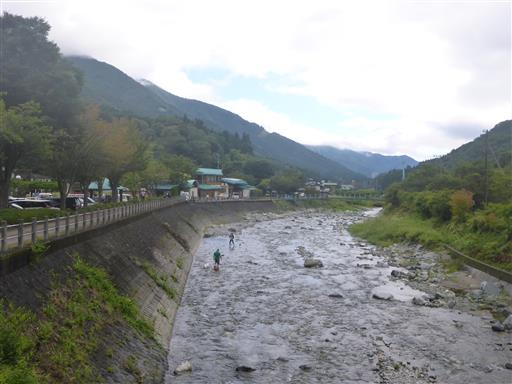
当分の間は車道歩きが続く。しばらく歩くと巨大なキャンプ場が見えてくる。
広大な敷地なのだが、どこもかしこもテントで埋まっているのがすごい。

草に覆われた木橋。
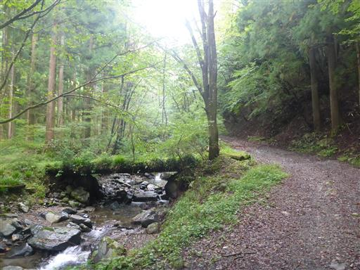
川の側の水たまり。地面から水が湧き出している。
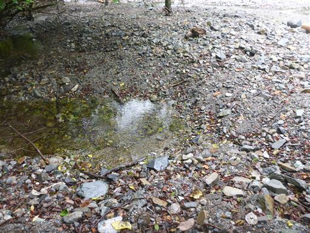
少しだけ河原で遊ぶ。
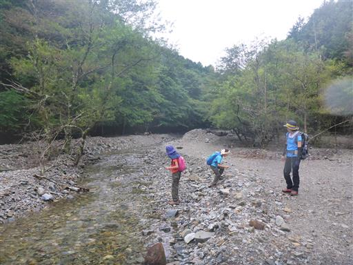
道路上を流れる川に簡易な橋が置かれている。
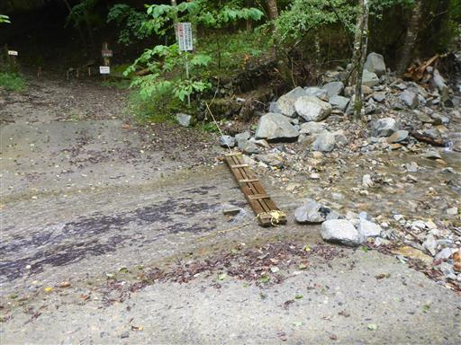
その先が車通行止めの場所。まだしばらく車道歩きは続く。
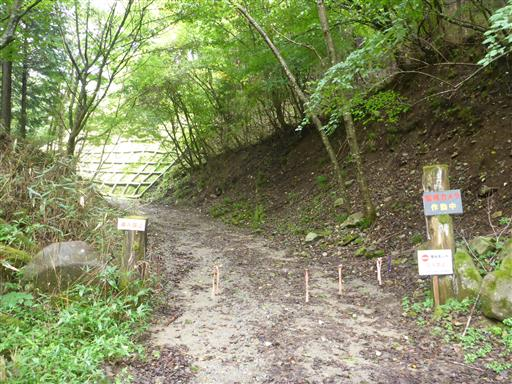
1時間半車道を歩いて、ようやく菰釣山登山口に到着する。
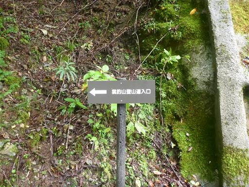
登山道は沢沿いに付けられていて、少々荒れている。
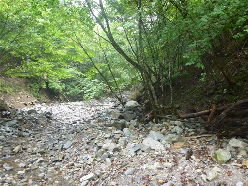
川の中や右岸左岸と登山道は場所を移すため、ルートを追うのが難しい。
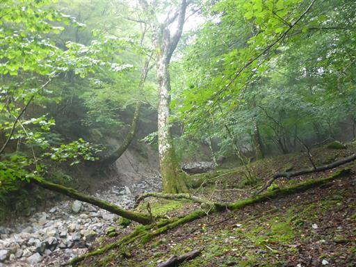
周囲はだんだんと雲に覆われてきた。
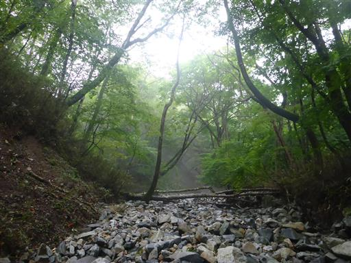
小さな小さなカエルを発見。
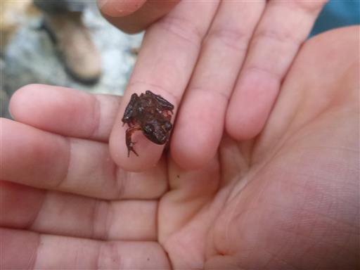
倒木に小さな石が積まれている。ここで本流から離れて左折する。
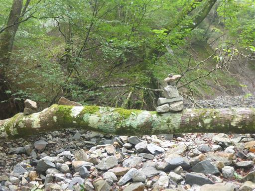
相変わらず登山道は細い。
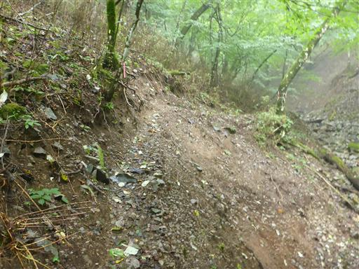
完全に雲に覆われてしまった。

稜線に到達。ここからは尾根道だ。
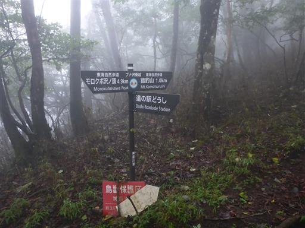
尾根道を歩き始めてすぐに菰釣避難小屋に到着する。
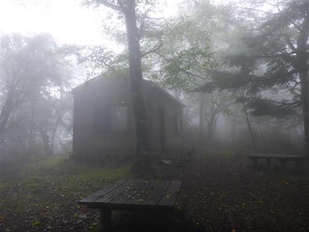
中を覗いてみる。非常にきれいに整備されている。
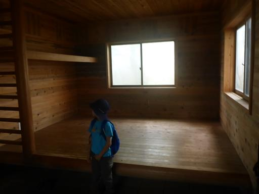
完全に雲に覆われた道を歩く。展望は全くない。
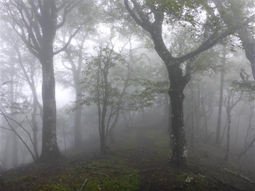
菰釣山山頂に到着する。標高1380m。
山頂も山頂標識も冴えない山だ。
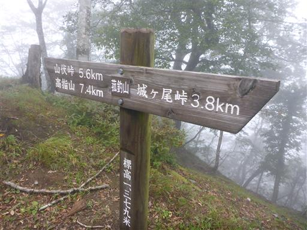
ここまで誰にも会わなかったが、意外にも山頂には2パーティがいて賑わっている。
展望もなにも無いため、昼食をとったら即下山開始する。
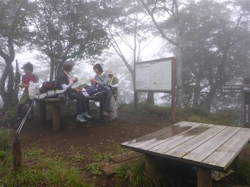
再び菰釣避難小屋まで戻ってきたとき、避難小屋内にいたヒキガエルを救助する。
どうやって小屋に入ったのか分からないが、小屋だと食べ物がとれないだろう。
外に出してやったが、あまり元気がなく動きは鈍い。
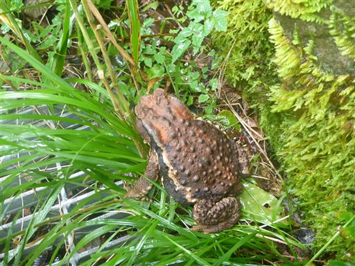
木に巻き付くツルに巻き付く緑のツル。
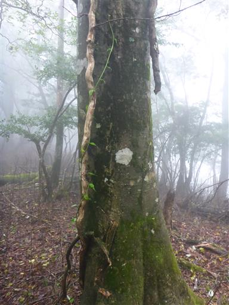
不思議な形のキノコを発見。サンコタケだろうか？
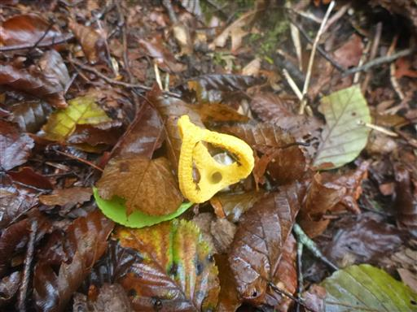
巨大ミミズ。誤って踏んづけてしまったのか、突っついてもあまり動かず元気がない。
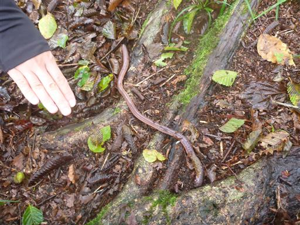
下山は少し遠回りして、城ヶ尾峠まで尾根道を歩いてから下山する。
小雨が降って来てレインコートを着る。子連れ登山で雨に降られるのはほぼ初めてだ。
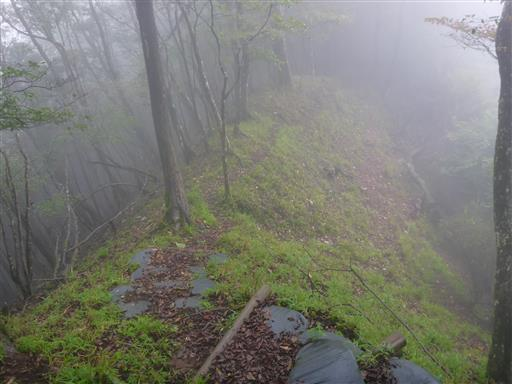
城ヶ尾峠に到着。
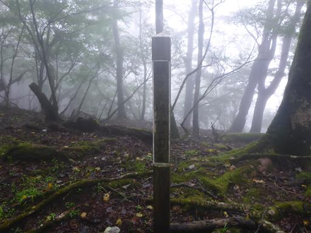
ここからの下山道があまり整備されていない。
尾根道は歩きやすいが、そこに至る道は登りも下りも難易度が高い。
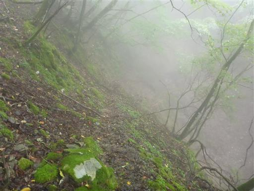
悪場を通過。
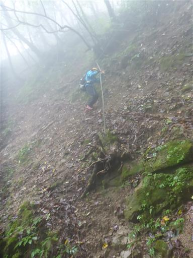
こちらも道が細い。登山道がほぼ水平でなく、背後は崖だ。
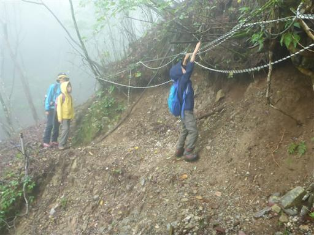
辺りはクモの巣だらけ。水滴がクモの巣についているのでよく目立つ。

車道の上部に辿り着く。ロープが一本垂れ下がっているが、ここを下れという事か？
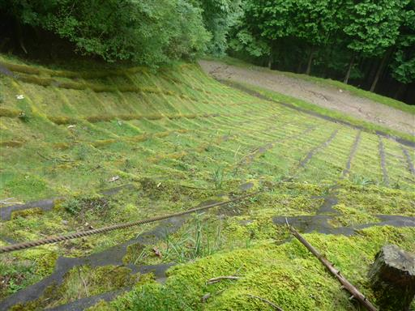
試しに下ってみるが、どう考えても登山道ではなさそうだ。
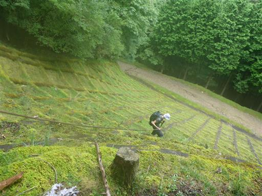
下った先に登山口の標識があったため、子供たちはこちらに回らせる。
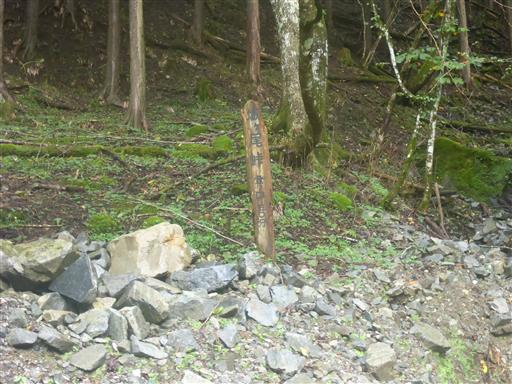
あとは道の駅どうしまで、延々車道歩き。
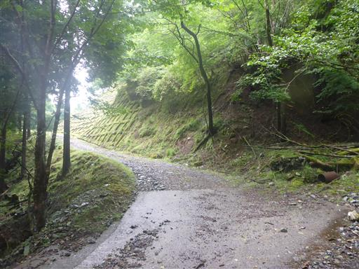
子供達は法面歩きが羨ましかったのか、あえて法面を歩いている。
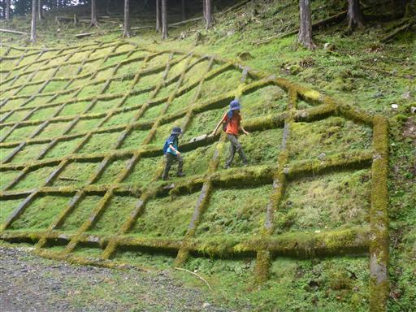
崩れかけた堰堤。メンテナンスはされていなさそうだ。
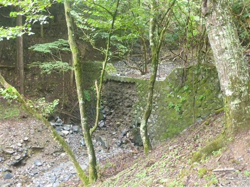
洗い越しになっている場所が数ヶ所ある。
水量は少ないが、息子は石を並べて渡ろうとしている。
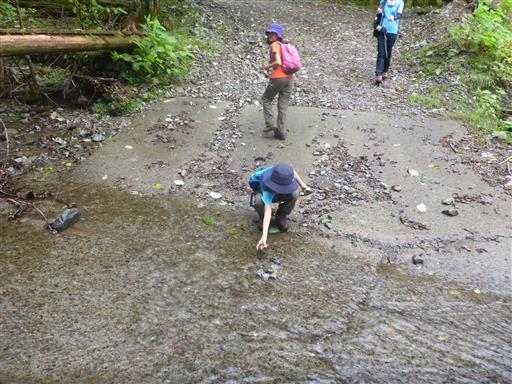
厳重なゲートを通過。
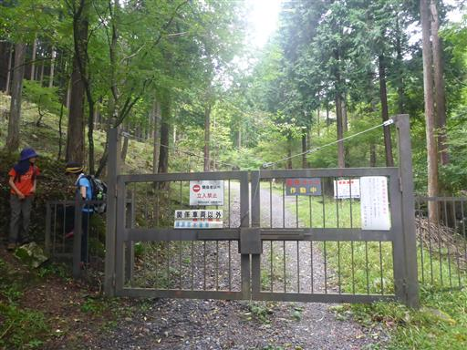
再び巨大キャンプ場に戻ってくる。キャンプ場の中の道を歩く。
本当は登りにこちらの道を歩きたかったのだが、
キャンプ場の中を突っ切る道なので、行きには道の存在に気付かなかった。
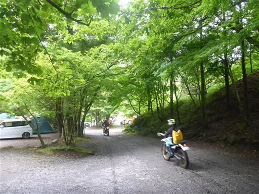
山の中から出てようやく視界が広がる。空はどんよりだ。
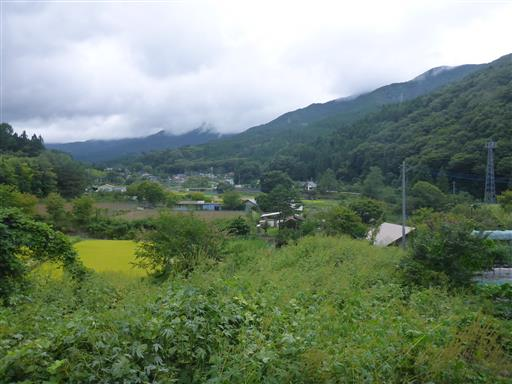
道の駅どうしに戻ってくる。今日のご褒美に信玄餅アイスを食べて帰宅する。
車道歩きが長く、展望の無い山頂で、人気のない理由がよく分かった。
あえて菰釣山に再訪することはないと思うが、畦ヶ丸からの縦走など
静かな山歩きを楽しめそうだ。
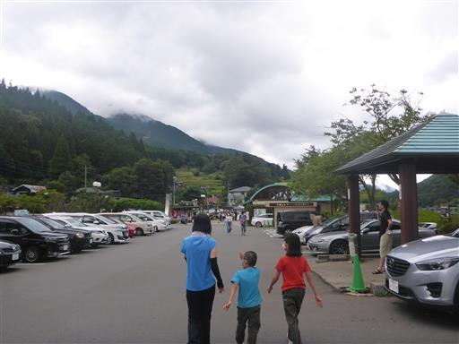